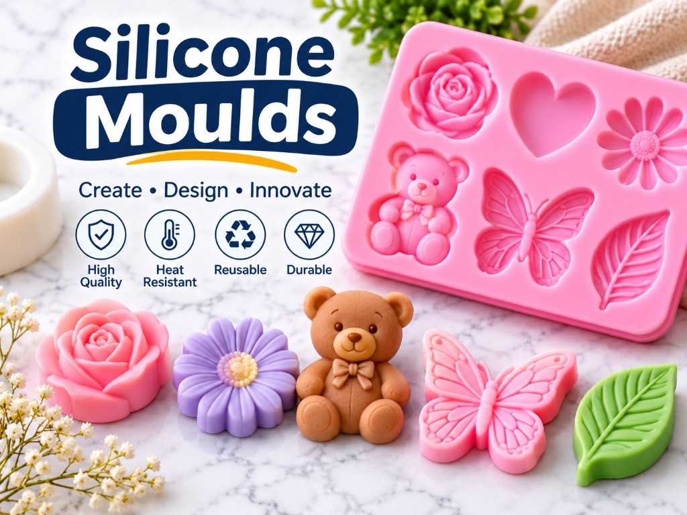
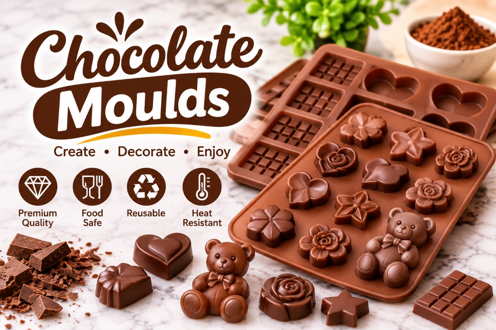

Whizz Moulds in Kanpur supplies silicone moulds for chocolate, along with silicone moulds for resin art, candle making, soap crafting, Jesmonite and concrete. Home bakers, chocolatiers, resin artists, gift sellers, craft studios and resellers can share their design, size and quantity with our team, and we will guide them to a suitable mould.

Handmade chocolates, resin gifts, scented candles, soaps and decorative concrete pieces are growing fast in Kanpur, both as hobbies and as small businesses. Whizz Moulds is based in Kanpur, Uttar Pradesh, and has worked in moulding and tooling since 2015. A good mould decides how clean, detailed and repeatable your final piece looks.
Silicone is popular across these crafts because it is flexible, so finished pieces can be demoulded easily, and it picks up fine surface detail. Share your requirement and we will discuss the right mould option with you.
For more about the company, visit Whizz Moulds. You can also explore our complete Products range.

Bars, hearts, flowers, truffles and gift-box shapes for home and small-batch chocolate making.
Coasters, keychains, pendants, jewellery, trays, clocks and name plates for epoxy and UV resin projects.
Pillar, shaped and decorative moulds for candle makers.
Bar, shaped and gift-set moulds for soap crafting.
Planters, trays, coasters and décor moulds for Jesmonite and concrete casting.
Moulds for eco resin projects, or made around your own shape, logo or name.
Making chocolates at home or for a small business? Silicone moulds for chocolate are popular because chocolate releases easily once it sets, and the flexible mould helps protect delicate shapes. Whizz Moulds can help you choose cavity shapes and sizes for bars, hearts, flowers, truffles, festival boxes and return gifts.
Whether you are making Diwali gift boxes, wedding favours, birthday return gifts or a small chocolate brand, share your shape, size and quantity with our team.
Food-safe use depends on the silicone grade, so please confirm the grade with our team before ordering for chocolate or any edible use.
Resin art is one of the fastest-growing handmade crafts in Kanpur. These are the most requested mould types for epoxy resin and UV resin projects:
| Craft | Typical Mould Shapes | What To Share With Us |
|---|---|---|
| Chocolate | Bars, hearts, flowers, truffles | Shape, cavity size, quantity |
| Resin art | Coasters, keychains, jewellery, trays | Size, thickness, resin type |
| Candle and soap | Pillars, bars, shaped pieces | Size, wax or soap type |
| Jesmonite and concrete | Planters, trays, coasters, décor | Size, depth, material weight |
Always follow the instructions of your resin, wax, soap, Jesmonite or concrete maker, as materials and temperatures differ.
Important: use separate moulds for food and for resin. A mould used for resin should not be used again for chocolate or any edible item.
Want a shape nobody else has? Your custom mould can start from a physical piece, sketch, drawing or digital design.
Not sure which mould suits your project? Share what you have and request a free discussion.
Send your design, sample or size requirement by WhatsApp or call.
We discuss the right mould type for your craft and material.
Receive a project-specific quote based on your requirement.
Approve the details and quantity.
Safe packing and dispatch for customers in Kanpur and across India.
A local team you can call, message or visit for your requirement.
Years of hands-on experience in moulding and tooling.
GST-registered business since 2019, with GST billing for business customers.
Discuss your own logo, name, shape or design for a custom mould.
Hobbyists, bakers, resin artists, gift sellers and resellers are all welcome.
Chocolate, resin, candle, soap, Jesmonite and concrete moulds can all be discussed in one place.
Silicone mould prices depend on your exact requirement rather than one fixed rate. Key factors can include:
Share your requirement with Whizz Moulds for a project-specific quotation.
You can contact Whizz Moulds in Kanpur, Uttar Pradesh by call or WhatsApp on +91 79425 56865 to discuss shapes, sizes and quantity, and get a quotation.
Contact Whizz Moulds on +91 79425 56865 to discuss your resin project, such as coasters, keychains, jewellery or trays, and receive a quotation.
No. Keep separate moulds for resin and for food. A mould used for resin should not be used for chocolate or any edible item.
Candle and soap moulds can be discussed with our team. Share the shape, size and the wax or soap you plan to use, because heat tolerance differs between materials.
Silicone is commonly used for Jesmonite and concrete casting, usually in thicker and deeper moulds. Share your size and material so our team can guide you.
Yes. You can share a sample, sketch, drawing or design file, and our team will discuss the custom mould requirement with you.
Bulk and reseller requirements can be discussed. Share the mould types and quantity for a project-specific quotation.
Prices vary by size, design detail, customisation and quantity. Send your requirement for an exact quote.